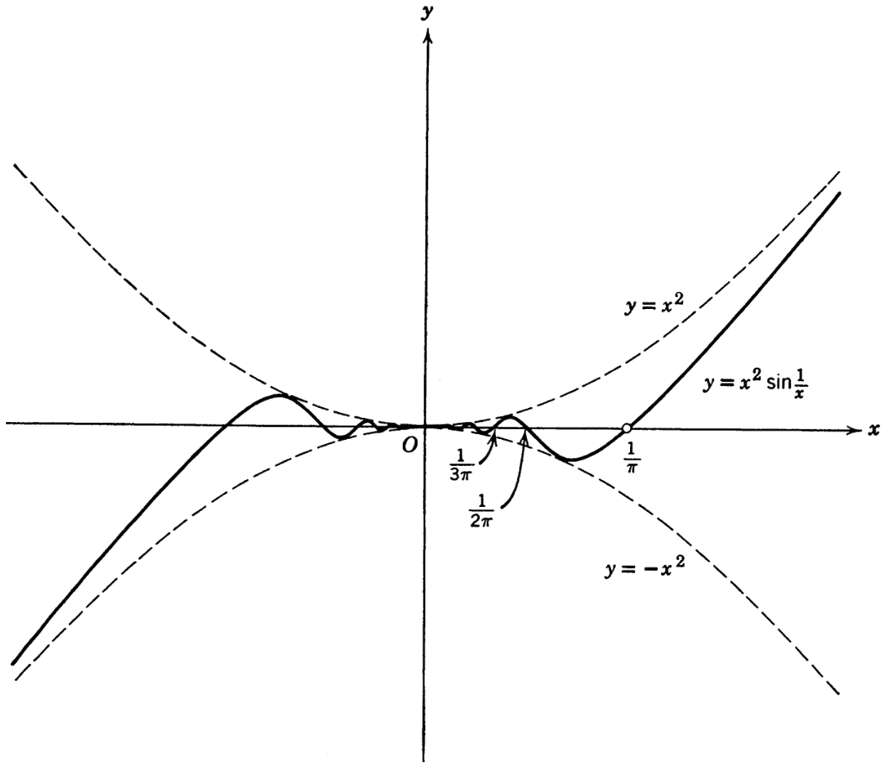

A.2 关于函数可微性的几点说明
一个函数即使在某区间的每一点都连续、都有导数，它的导数也未必连续。来看一个简单的例子，令
y=f(x)=x2sinx1(x=0),f(0)=0.这个函数处处有定义且处处连续。对 x=0，导数为
f′(x)=−x2(cosx1)x21+2xsinx1=−cosx1+2xsinx1.当 x 趋于零时，f′(x) 没有极限。另一方面，若直接构造差商 [f(h)−f(0)]/h=(h2sin(1/h))/h=hsin(1/h)，马上就可看出 h→0 时差商趋于零。因此 x=0 处的导数存在，且等于零。

图 3.26
为了直观地理解这个看似矛盾的情形，把函数的图像画出来（图 3.26）。它在 y=x2 和 y=−x2 之间振荡，交替地与这两条曲线相切。曲线的波峰高度与相应横坐标到原点的距离之比越来越小。然而这些波却并没有变得越来越平坦。事实上，它们的斜率由 f′(x)=2xsin(1/x)−cos(1/x) 给出。在 x=1/(2nπ) 这些点处 cos(1/x)=1，斜率为 −1；在 x=1/[(2n+1)π] 这些点处 cos(1/x)=−1，斜率为 +1。
译者注 这里有两个不同的极限过程。求 f′(0) 时，割线始终有一端固定在原点；考察 limx→0f′(x) 时，比较的则是附近各点的切线。固定端点的割线可以趋于水平，移动着的切线却始终在摆动。
这个例子说明导数可以处处存在而不连续。与之相对，还有一个简单的定理，可以澄清以前的一系列例子和讨论。
定理。 设 f(x) 在 x=a 的一个邻域内连续，对 x=a 有导数 f′(x)。若另有 limx→af′(x)=b，则在 a 点导数也存在，而且 f′(a)=b。
证明。 结论可从中值定理直接得出。事实上，[f(a+h)−f(a)]/h=f′(ξ)，其中 ξ 在 a 与 a+h 之间。令 h 趋于零，依假设 f′(ξ) 趋于 b，结论即得。
用类似的方法可以证明一个相应的定理。若 f(x) 在 a≤x≤b 上连续，在 a<x<b 处可微，且当 x 趋于 a 时导数无限增大，则当 h 从正侧趋于零时，右差商 [f(a+h)−f(a)]/h 也无限增大，因此在 x=a 没有有限的右导数。从几何上说，这意味着在坐标为有限值 [a,f(a)] 的点处，曲线具有竖直切线。